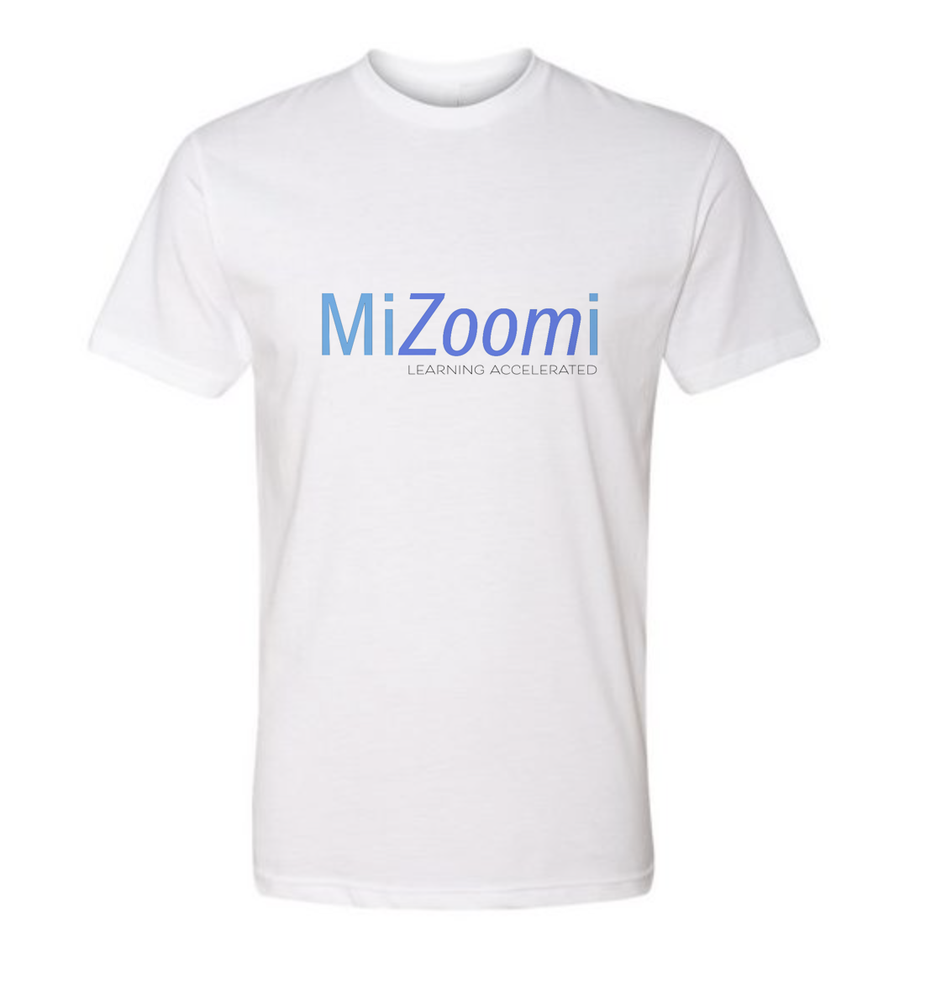

Project 2: Instructional Design: How to Use Zoom
Introduction and Purpose:
Working with a team, we are constructing a training seminar that documents our procedure of Analysis, Designing, Development, Implementation and finally Evaluation. Our team name is MiZoomi.
Our course is part of New Teacher Institute Training (NTI). NTI is for new educators and is designed to provide skills to make new teachers successful in the classroom. NTI is a seven-day training to prepare educators who previously worked in the industry, with no teaching experience or training, to transition successfully into the classroom. Participants can earn three college credit hours towards their Career Education Temporary Authorization Certificate (TAC) or Career License to Teach secondary students.
Assets used as part of assessments
To create the audio in this project, I recorded the audio on my phone in Voice Memos. I chose a track from Purple-Planet for the music.
I used Adobe Audition to mix the spoken section with the music. In the voice recording there was a slight hissing in the background. I used the DeNoise filter to to reduce the hissing sound that was in the original recording. I played with turning it up as far as it would go, which I believe is 100. I ended up moving it back to about 48. At this level, the background noise is not apparent, but I also was not losing any of the dynamic range of the spoken words.
I also used the following filters to enhance the sound of my voice:
- Parametric Equalizer
- Loudness Radar
- Graphic Equalizer (20 Bands)
This audio introduces the section on tool selection, care of tools and supplies. The use of audio is an invaluable way to share additional knowledge and information that not be discernible from just watching a video.
Assets

The digital images in this project were created in Adobe Photoshop and Adobe Illustrator.
The following are a few of the raster and vector techniques that were employed to make the images:
- Rotating images
- Adding objects by cloning
- Tracing images to make shapes
- Creating color gradients
- Editing paths and shaped
- Formatting texts
- Joining artwork together to combine paths
The digital images are key to this projects because one of the exercises in the video will include areas where you can stop and compare your sculpting progress to images. This will allow the student to check to see if they are achieving correct placement and proportion of features.
Etc.
The video was shot on a Canon EOS Rebel T5. For the video, I used Adobe After Effects, because I wanted to add a bit of animation to the title sequence. I wanted it to appear as if the “photos” were falling into place onto a table. A small drop shadow was added to each of the photos, and then a Gaussian Blur was added to the photos that fell under the top photo.
I placed all the videos in After Effects and positioned them according to where I needed them to go with the audio. In After Effects I color corrected each video by using Curves. Also adjusted brightness and contrast as needed.
This video shows the opening and ending credits. It combines elements of still images, video, and audio.
Conclusion
By combining the above elements of audio, digital image, and video projects, I will construct a video course that teaches people to sculpt a face in paper clay. The use of still images will work as exercises or information places in the presentation. By using video, I will be able to show the complete process of sculpting, allowing the student to either just watch or sculpt along with me.
And again, the audio allows me to share extra information, and the music will add mood to the entire project without being too intrusive.